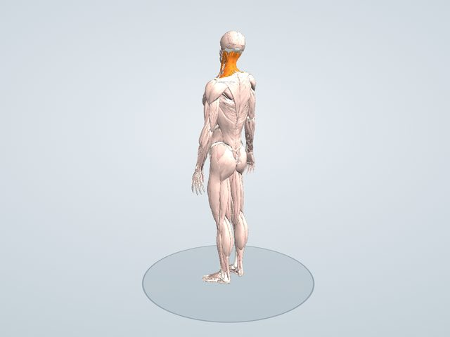

主な原因
- 不自然な姿勢で長い時間寝る(高すぎる枕、ソファでのうたた寝など)
- 首・肩が疲れていたり冷えていたりする
- 寝返りが少ない
体の中で起きていること
寝ている間に、首の筋(肩甲挙筋・胸鎖乳突筋・僧帽筋上部・板状筋)が引き伸ばされたまま、または縮んだまま長く続き、筋や関節のまわりに軽い炎症が起きると考えられています。痛む側へ首を動かすと、炎症のある筋が引っぱられて強く痛みます。
硬くなりやすい・負担がかかる筋
- 肩甲挙筋
- 胸鎖乳突筋
- 僧帽筋 上部
- 板状筋(首の後ろ)
「首を回すと痛む」の姿勢で、これらの筋を色分けして3Dで見られます。奥にある筋は、アプリの「関係する筋だけ表示」で見えるようになります。
解消のアプローチ
体の不調を解消するアプローチを、「使う(鍛える)」「ほぐす」「伸ばす」の3つに分けて紹介します。「中心」は、この不調でとくに大切なアプローチです。
痛みの強い1〜2日は、痛む所を強くもんだり、無理に伸ばしたりしないでください。痛みが落ち着いてから、痛む所から少し離れた肩のまわりをやさしくほぐし、痛みのない範囲で動かします。
ほぐす 中心
硬くこった筋を押す・さする・転がして、血の巡りをよくし、緊張をゆるめる
- 首の付け根(僧帽筋上部・肩甲挙筋)
- 反対の手で肩の上の筋をつかみ、肩をゆっくり回しながら30秒ほどもみほぐす。温めてから行うと効果的です。
対象: 僧帽筋 上部・肩甲挙筋
伸ばす(ストレッチ)
縮んで硬くなった筋を伸ばし、関節の動く範囲を広げる
- 首の横(左側)
- 左肩を下げたまま、頭を右へ倒す。 右手を頭にのせて軽く引いてもかまいませんが、強く引っぱらないこと。
おもに僧帽筋上部・胸鎖乳突筋・斜角筋・肩甲挙筋
アプリでは、それぞれの動きで使われる筋(赤)・伸ばされる筋(青)を3Dで再生し、ほぐす場所(紫)を表示できます。
生活の工夫
- 痛みの強いうちは、楽な姿勢で安静にし、熱っぽいときは冷やす
- 落ち着いてきたら温めて、少しずつ動かす
- 枕の高さを見直す
こんなときは医療機関へ
手や腕のしびれ、力が入りにくい、発熱、強い頭痛をともなう、数日たってもよくならない場合は、受診してください。
同じ部位の不調
ここで紹介しているのは一般的な情報で、診断や治療の代わりにはなりません。痛みやしびれがあるとき、症状が続くときは医療機関を受診してください。ストレッチや運動は痛みのない範囲で行い、痛みが強くなる場合は中止してください。